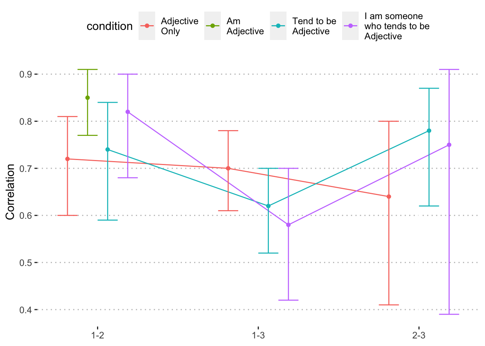

We also plan to evaluate test-retest reliability within formats (within session and over two weeks); we expect slightly higher test-retest reliability for item wording formats that are more specific – formats #3 and #4 above vs the use of adjectives alone. In other words, we expect equal or lower retest reliability for the adjectives than for longer phrases. We will also consider the effect of performance on the word recall task on retest reliability .
The data structure needed for these analsyes is in wide-format. That is, we require one column for each time point. In addition, we hope to examine reliability within format, which requires selecting only the response options which match the original, Block 1, assessment.
items_df = items_df %>%
mutate(condition = tolower(condition)) %>%
mutate(condition = factor(condition,
levels = c("a", "b", "c", "d"),
labels = c("Adjective\nOnly", "Am\nAdjective", "Tend to be\nAdjective", "I am someone\nwho tends to be\nAdjective")))
items_matchb1 = items_df %>%
filter(format == condition) %>%
mutate(block = paste0("block_", block)) %>%
select(-timing, -seconds_log, -i) %>%
spread(block, response)items_matchb1 %>%
select(contains("block")) %>%
psych::corr.test(use = "pairwise") %>%
print(short = F)## Call:psych::corr.test(x = ., use = "pairwise")
## Correlation matrix
## block_1 block_2 block_3
## block_1 1.00 0.78 0.63
## block_2 0.78 1.00 0.72
## block_3 0.63 0.72 1.00
## Sample Size
## block_1 block_2 block_3
## block_1 1015 237 406
## block_2 237 237 98
## block_3 406 98 406
## Probability values (Entries above the diagonal are adjusted for multiple tests.)
## block_1 block_2 block_3
## block_1 0 0 0
## block_2 0 0 0
## block_3 0 0 0
##
## Confidence intervals based upon normal theory. To get bootstrapped values, try cor.ci
## raw.lower raw.r raw.upper raw.p lower.adj upper.adj
## blc_1-blc_2 0.72 0.78 0.82 0 0.71 0.83
## blc_1-blc_3 0.56 0.63 0.68 0 0.56 0.68
## blc_2-blc_3 0.60 0.72 0.80 0 0.58 0.81condition_cors = items_matchb1 %>%
select(condition, contains("block")) %>%
group_by(condition) %>%
nest() %>%
mutate(cors = map(data, psych::corr.test, use = "pairwise"),
cors = map(cors, print, short = F),
cors = map(cors, ~.x %>% mutate(comp = rownames(.)))) %>%
select(condition, cors) %>%
unnest(cols = c(cors)) condition_cors %>%
select(condition, comp, raw.r, raw.lower, raw.upper, raw.p) %>%
kable(digits = c(0,0,2,2,2,3),
caption = "Test-retest correlations for each condition.",
booktabs = T) %>%
kable_styling()| condition | comp | raw.r | raw.lower | raw.upper | raw.p |
|---|---|---|---|---|---|
| Am Adjective | blc_1-blc_2 | 0.85 | 0.77 | 0.91 | 0 |
| Am Adjective | blc_1-blc_3 | ||||
| Am Adjective | blc_2-blc_3 | ||||
| Adjective Only | blc_1-blc_2 | 0.72 | 0.60 | 0.81 | 0 |
| Adjective Only | blc_1-blc_3 | 0.70 | 0.61 | 0.78 | 0 |
| Adjective Only | blc_2-blc_3 | 0.64 | 0.41 | 0.80 | 0 |
| Tend to be Adjective | blc_1-blc_2 | 0.74 | 0.59 | 0.84 | 0 |
| Tend to be Adjective | blc_1-blc_3 | 0.62 | 0.52 | 0.70 | 0 |
| Tend to be Adjective | blc_2-blc_3 | 0.78 | 0.62 | 0.87 | 0 |
| I am someone who tends to be Adjective | blc_1-blc_2 | 0.82 | 0.68 | 0.90 | 0 |
| I am someone who tends to be Adjective | blc_1-blc_3 | 0.58 | 0.42 | 0.70 | 0 |
| I am someone who tends to be Adjective | blc_2-blc_3 | 0.75 | 0.39 | 0.91 | 0 |
condition_cors %>%
mutate(comp_num = case_when(
comp == "blc_1-blc_2" ~ 1,
comp == "blc_1-blc_3" ~ 2,
comp == "blc_2-blc_3" ~ 3,
)) %>%
ggplot(aes(x = comp_num, y = raw.r, color = condition)) +
geom_line(position = position_dodge(.5)) +
geom_point(position = position_dodge(.5)) +
geom_errorbar(aes(ymin = raw.lower, ymax = raw.upper),
position = position_dodge(.5),
width = .5) +
scale_x_continuous(breaks = c(1:3),
labels = c("1-2", "1-3", "2-3")) +
labs(x = NULL, y = "Correlation") +
theme_pubclean()
items_cors = items_matchb1 %>%
select(item, condition, contains("block")) %>%
group_by(item, condition) %>%
nest() %>%
mutate(cors = map(data, psych::corr.test, use = "pairwise"),
cors = map(cors, print, short = F),
cors = map(cors, ~.x %>% mutate(comp = rownames(.)))) %>%
select(item, condition, cors) %>%
unnest(cols = c(cors)) items_cors %>%
mutate(raw.r = printnum(raw.r),
raw.r = case_when(
raw.p < .05 ~ paste0(raw.r, "*"),
TRUE ~ raw.r)) %>%
select(item, condition, comp, raw.r) %>%
spread(comp, raw.r) %>%
kable(caption = "Test-retest correlations for each item and condition.",
booktabs = T) %>%
kable_styling()| item | condition | blc_1-blc_2 | blc_1-blc_3 | blc_2-blc_3 |
|---|---|---|---|---|
| active | Adjective Only | 0.87 | -0.25 | NA |
| active | Am Adjective | 0.93 | NA | NA |
| active | Tend to be Adjective | 1.00* | 0.75 | 0.63 |
| active | I am someone who tends to be Adjective | NA | -0.50 | NA |
| adventurous | Adjective Only | 0.50 | -0.13 | NA |
| adventurous | Am Adjective | NA | NA | NA |
| adventurous | Tend to be Adjective | NA | 0.17 | NA |
| adventurous | I am someone who tends to be Adjective | 0.97 | -0.87 | NA |
| calm | Adjective Only | 0.58 | 0.61 | 1.00 |
| calm | Am Adjective | -1.00 | NA | NA |
| calm | Tend to be Adjective | NA | 0.40 | NA |
| calm | I am someone who tends to be Adjective | NA | -0.19 | NA |
| careless | Adjective Only | 0.87 | 0.15 | 1.00 |
| careless | Am Adjective | 0.69 | NA | NA |
| careless | Tend to be Adjective | 1.00 | 0.16 | NA |
| careless | I am someone who tends to be Adjective | NA | NA | NA |
| caring | Adjective Only | -0.50 | 0.92* | NA |
| caring | Am Adjective | NA | NA | NA |
| caring | Tend to be Adjective | 1.00* | 0.34 | 0.50 |
| caring | I am someone who tends to be Adjective | -1.00 | NA | NA |
| cautious | Adjective Only | NA | 0.64 | NA |
| cautious | Am Adjective | 1.00 | NA | NA |
| cautious | Tend to be Adjective | NA | -0.42 | NA |
| cautious | I am someone who tends to be Adjective | NA | 0.91 | NA |
| creative | Adjective Only | 0.87 | 0.53 | NA |
| creative | Am Adjective | 1.00* | NA | NA |
| creative | Tend to be Adjective | 0.50 | 0.71 | NA |
| creative | I am someone who tends to be Adjective | NA | NA | NA |
| curious | Adjective Only | NA | 0.71 | NA |
| curious | Am Adjective | 0.30 | NA | NA |
| curious | Tend to be Adjective | -1.00 | 0.55 | NA |
| curious | I am someone who tends to be Adjective | NA | 0.87 | NA |
| friendly | Adjective Only | NA | 0.67 | NA |
| friendly | Am Adjective | NA | NA | NA |
| friendly | Tend to be Adjective | 1.00 | -0.54 | NA |
| friendly | I am someone who tends to be Adjective | 1.00* | NA | NA |
| hardworking | Adjective Only | 1.00 | -0.25 | NA |
| hardworking | Am Adjective | 1.00 | NA | NA |
| hardworking | Tend to be Adjective | NA | 0.50 | NA |
| hardworking | I am someone who tends to be Adjective | NA | NA | NA |
| helpful | Adjective Only | 0.00 | 0.00 | NA |
| helpful | Am Adjective | 1.00* | NA | NA |
| helpful | Tend to be Adjective | NA | 0.25 | 1.00 |
| helpful | I am someone who tends to be Adjective | NA | NA | NA |
| imaginative | Adjective Only | 0.90 | 0.87 | 1.00 |
| imaginative | Am Adjective | NA | NA | NA |
| imaginative | Tend to be Adjective | 0.98 | 0.87* | 0.98 |
| imaginative | I am someone who tends to be Adjective | -1.00 | NA | NA |
| impulsive | Adjective Only | 1.00 | 0.75 | NA |
| impulsive | Am Adjective | NA | NA | NA |
| impulsive | Tend to be Adjective | 0.96 | 0.87* | 0.69 |
| impulsive | I am someone who tends to be Adjective | NA | 0.62 | NA |
| impusive | Adjective Only | NA | NA | NA |
| intelligent | Adjective Only | 1.00 | 0.80 | 1.00 |
| intelligent | Am Adjective | NA | NA | NA |
| intelligent | Tend to be Adjective | NA | 0.70 | NA |
| intelligent | I am someone who tends to be Adjective | -1.00 | 0.50 | -1.00 |
| lively | Adjective Only | NA | 0.98* | NA |
| lively | Am Adjective | NA | NA | NA |
| lively | Tend to be Adjective | 1.00 | 0.69 | 1.00 |
| lively | I am someone who tends to be Adjective | 1.00 | NA | NA |
| moody | Adjective Only | 0.79 | 0.94* | NA |
| moody | Am Adjective | 1.00 | NA | NA |
| moody | Tend to be Adjective | NA | 0.10 | NA |
| moody | I am someone who tends to be Adjective | 1.00 | 0.84 | NA |
| nervous | Adjective Only | NA | 0.54 | NA |
| nervous | Am Adjective | -1.00* | NA | NA |
| nervous | Tend to be Adjective | 1.00 | -0.58 | NA |
| nervous | I am someone who tends to be Adjective | NA | -0.87 | NA |
| organized | Adjective Only | 0.97* | 0.87 | 0.97 |
| organized | Am Adjective | 1.00 | NA | NA |
| organized | Tend to be Adjective | NA | 0.98* | NA |
| organized | I am someone who tends to be Adjective | NA | NA | NA |
| outgoing | Adjective Only | NA | 0.88 | NA |
| outgoing | Am Adjective | 0.77 | NA | NA |
| outgoing | Tend to be Adjective | 1.00 | 0.95* | NA |
| outgoing | I am someone who tends to be Adjective | NA | NA | NA |
| reckless | Adjective Only | 0.87 | 0.94* | NA |
| reckless | Am Adjective | NA | NA | NA |
| reckless | Tend to be Adjective | -0.18 | -0.08 | 0.98 |
| reckless | I am someone who tends to be Adjective | NA | -0.87 | NA |
| responsible | Adjective Only | NA | 1.00* | NA |
| responsible | Am Adjective | NA | NA | NA |
| responsible | Tend to be Adjective | NA | 0.48 | NA |
| responsible | I am someone who tends to be Adjective | NA | -0.50 | NA |
| softhearted | Adjective Only | NA | 0.94* | NA |
| softhearted | Am Adjective | NA | NA | NA |
| softhearted | Tend to be Adjective | NA | 0.49 | NA |
| softhearted | I am someone who tends to be Adjective | NA | 0.98 | NA |
| sophisticated | Adjective Only | 1.00* | -0.40 | 1.00 |
| sophisticated | Am Adjective | 0.96* | NA | NA |
| sophisticated | Tend to be Adjective | 1.00 | 0.62 | NA |
| sophisticated | I am someone who tends to be Adjective | NA | 0.97 | NA |
| sympathetic | Adjective Only | NA | 0.53 | NA |
| sympathetic | Am Adjective | 0.50 | NA | NA |
| sympathetic | Tend to be Adjective | 0.50 | NA | NA |
| sympathetic | I am someone who tends to be Adjective | 0.43 | 1.00* | NA |
| talkative | Adjective Only | NA | 0.12 | NA |
| talkative | Am Adjective | NA | NA | NA |
| talkative | Tend to be Adjective | NA | 0.90* | NA |
| talkative | I am someone who tends to be Adjective | NA | -0.19 | NA |
| thorough | Adjective Only | 1.00 | 0.76 | 1.00 |
| thorough | Am Adjective | 0.50 | NA | NA |
| thorough | Tend to be Adjective | 0.50 | 0.81 | NA |
| thorough | I am someone who tends to be Adjective | NA | -0.50 | NA |
| thrifty | Adjective Only | 0.93 | 0.69 | 1.00 |
| thrifty | Am Adjective | 0.91 | NA | NA |
| thrifty | Tend to be Adjective | 1.00 | 0.90* | 1.00 |
| thrifty | I am someone who tends to be Adjective | NA | 0.00 | NA |
| warm | Adjective Only | NA | 1.00* | NA |
| warm | Am Adjective | NA | NA | NA |
| warm | Tend to be Adjective | NA | 0.81 | -1.00 |
| warm | I am someone who tends to be Adjective | NA | -0.50 | NA |
| worrying | Adjective Only | 0.00 | 0.96* | 0.00 |
| worrying | Am Adjective | NA | NA | NA |
| worrying | Tend to be Adjective | NA | 0.80 | NA |
| worrying | I am someone who tends to be Adjective | NA | NA | NA |
items_cors %>%
mutate(comp_num = case_when(
comp == "blc_1-blc_2" ~ 1,
comp == "blc_1-blc_3" ~ 2,
comp == "blc_2-blc_3" ~ 3,
)) %>%
ggplot(aes(x = comp_num, y = raw.r, color = condition)) +
geom_jitter(width = .1) +
scale_x_continuous(breaks = c(1:3),
labels = c("1-2", "1-3", "2-3")) +
labs(x = NULL, y = "Correlation") +
theme_pubclean()Test-retest correlations of specific items across word format. Each dot represents the test-retest correlation within a specific item.